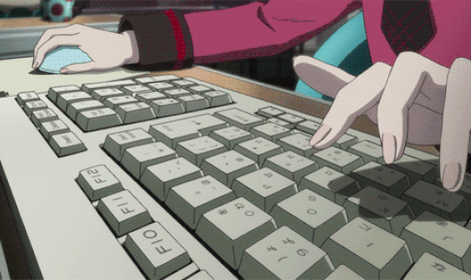

Software

Here's a list of the software i use, everything here is open source, unless stated otherwise.
<<< Arch and Gentoo PCs >>>
-> Terminal emulator:
rxvt-unicode — It's pretty robust and easy to customize (via .Xresources or .Xdefaults). Supports
perl scripts and pairs well with ranger since it allows you to preview images.
-> WM:
i3-gaps — i3wm fork with more features, it's incredibly easy to rice (even without pywal) and gets the job done.
-> File manager:
ranger — this really speeds up your workflow, after you set macros for all the directories you visit often and get used to it you'll become a Speedy McSpeedington.
-> Music player:
mpd +
ncmpcpp — i literally started using these because they look cool, but they are actually quite comfy and make streaming music between my PCs pretty easy.
-> Video player:
mpv — extremely customizable, supports basically every format you can think of and has a ton of extensions for all kinds of stuff (e.g. automatic subtitle search).
-> Image viewer:
feh and
sxiv — minimalistic and lightweight, both support custom keyboard shortcuts, feh can also be used as a wallpapersetter.
-> Text editor:
vim — probably the best text editor out there, supports dozens of plugins and allows you to customize every single shortcut/keypress to improve your workflow (also the syntax for the vimrc file is really simple to understand so you can start making macros right away).
-> Messaging:
irssi — it just werks ecs dee
-> BitTorrent client:
transmission — It has been my bittorrent client of choice for years and i'm not going to switch anytime soon, it works and it's very gentle on your memory.
Other KKool stuff:
pywal — creates a colorscheme for your system from a given image (wal -i ~/path/to/image.jpg).
dmenu — dynamic menu that allows you to launch everything with a couple keytaps.
telegram — nothing beats the satisfatcion of getting banned from a group for spamming weeb stickers.
qtchan — cozy 4ch browser, it's still a WIP, but it does its job well (might freeze a bit when up/downscaling text and images).
ahoviewer — booru browser, clean and intuitive, i use it on both windows and linux.
mupdf — lightweight .pdf, e-book and manga reader.
<<< Win7 machine >>>
Shitty desktop i leave on 24/7 to
seed stuff/play vidya.
-> Visual style:
+1 — pretty comfy,
here's how it looks on my PC.
-> Video player:
mpc-hc — lightweight, minimalistic and well usable without a mouse. You can also set a custom background
:^)
-> Image viewer:
JPEGview — relatively customizable, but very minimalistic, i picked it just because it fits my rice. Allows you to see EXIF data literally at the push of a button.
-> Music player:
f2k —
closed source, but still pretty good, can be riced to the extreme (
like this).
-> Text editor:
JOE — extremely lightweight, it's basically nano for Windows. Super comfy if paired with a CP437 font (i personally use Px437 IBM VGA8).
>>
homepage
↑↑↑ gensokyioradio.net ↑↑↑